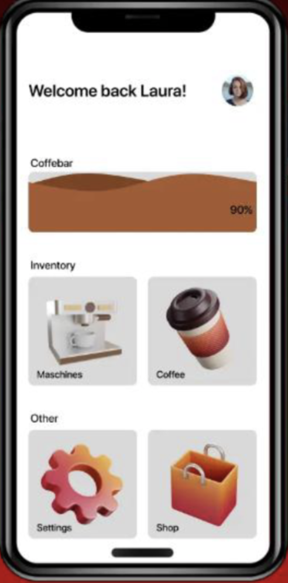

Bestelle die Aromatico Produkte ganz leicht per App!
Mit unseren 3D-Manual nie wieder Probleme bei der Wartung!
Schaue ob die Kaffeemaschine in deine Küche passt!
Erhalte Errinerungen bevor dir der Kaffee ausgeht

Wir präsentieren ein neues Dashboard Design
Oben mit jeweiliger Kaffeebar, um zu erkennen wie der Stand ihres Kaffeelagers ist.
Unter dem Punkt "Maschinen" sind ihre eigenen Kaffeemaschinen gelagert aber auch Kaffeemaschinen, welche sie favorisiert haben.
Unter "Kaffee" können sie sich ihren Kaffeelager anschauen und ihren Kaffeekonsum kontrollieren.
Unter Einstellungen können sie einstellen wie ihr täglicher Kafeekonsum ist, so dass ihr Kaffeelager täglich so reduziert wird wie sie es eingestellt haben.
Unten rechts kommen sie zum Aromatico Shop. Shoppen sie hier bequem und einfach aus unserem riesen Sortiment.